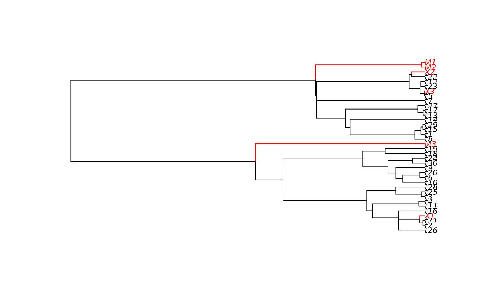

Graft missing taxa and missing clades on a time-calibrated phylogeny
Source:R/graft_missing_taxa_and_clades.R
graft_missing_taxa_and_clades.RdThis function links the two grafting processes of phylograftR in one run, with a unique set of inputs:
the missing taxa are grafted into their target clades with graft_missing_taxa(),
and the missing clades are grafted as sisters of backbone clades with graft_missing_clades().
By default the missing taxa are grafted first and the missing clades second, but the order can be chosen with grafting_order.
For each grafted phylogeny of the first step, the second step is run on this phylogeny used as backbone.
With several stochastic maps and/or several simulations, the output is thus the same set of P maps x N simulations grafted phylogenies as with one of the two functions,
but each phylogeny includes both the grafted taxa and the grafted clades.
The grafted tips and branches of the output (grafted_tips and grafted_edges) identify all the grafted taxa, from the two steps.
Usage
graft_missing_taxa_and_clades(
phy,
missing_taxa_list,
grafting_order = c("taxa", "clades"),
method = "BD_clades",
min_tips = 5,
return_BD_model_summary = FALSE,
include_target_clade_stem = TRUE,
use_excluded_subclades = TRUE,
exclude_subclades_stem = TRUE,
total_richness_per_clades = NULL,
simmap = NULL,
allowed_states = NULL,
treat_states_as_ranges = FALSE,
return_simmap = TRUE,
min_valid_fraction = 0.1,
max_age_redraws = 1000,
seed = 1234,
nb_simulations = 1,
force_simulations = FALSE,
parallel = NULL,
save_temp = FALSE,
save_temp_every = NULL,
temp_file_path = NULL,
clean_temp_files = TRUE,
resume = FALSE,
ultrametric_tol = .Machine$double.eps^0.5,
verbose = TRUE
)Arguments
- phy
An object of class
"phylo". The backbone phylogeny on which taxa and clades are grafted. It must be rooted, binary (no polytomies) and ultrametric (i.e., be time-calibrated).- missing_taxa_list
A list with two elements named
taxaandclades, each amissing_taxa_listas expected bygraft_missing_taxa()($taxa, with$Target_clade) andgraft_missing_clades()($clades, with$Sister_clade). This is the format returned bybuild_missing_taxa_list(),import_missing_taxa_list()andbuild_missing_taxa_list_from_taxonomy()when both types of taxa are provided. These lists are used to defined the constraints used to graft the missing lineages such as the identity of the target clades and excluded subclades (for missing taxa), of sister clades (for missing clades), the availability of stem branches for grafting, and the states in which lineages can be grafted if asimmapis provided to further control the grafting process. See the build/import functions for details. Taxon names must be unique across the two elements, and absent fromphy$tip.label. If you only have one type of missing lineages (i.e., taxa or clades), use the corresponding function instead.- grafting_order
Character vector of length 2. Order of the two steps:
c("taxa", "clades")(as the default, the missing taxa are grafted first, then the missing clades), orc("clades", "taxa"). See 'Order of the steps' in the Details section.- method
Character string. Method used to draw the divergence times of the missing taxa (Step carried with
graft_missing_taxa()):"BD_clades"or"uniform". Ignored for the missing clades, which always rely on birth-death models (see 'Method of the two steps' in Details). Default is"BD_clades".- min_tips
Integer. Minimum number of tips of the clade used to fit the birth-death models. A single value is used for both steps. If the target clade has fewer tips, the smallest enclosing clade with at least
min_tipstips is used instead. Must be at least 3. Default is5.- return_BD_model_summary
Logical. Whether to report the birth-death models fitted during the grafting, for both steps. If
TRUE, each grafted phylogeny has the attribute"BD_model_summary": a data.frame with one row per model, with a columnstep("taxa"or"clades"). The columns that exist in only one type of models areNAfor the other. Withmethod = "uniform", only the models of the missing clades are reported. It can be extracted withextract_BD_model_summary(). Default isFALSE.- include_target_clade_stem, use_excluded_subclades, exclude_subclades_stem
Only used for the missing taxa (these constraints do not exist for the missing clades). Whether the stem branch of target clades and excluded subclades are available for grafting. See
graft_missing_taxa(). Defaults areTRUE.- total_richness_per_clades
NULL, or a list with two elements namedtaxaandclades, eachNULLor atotal_richness_per_cladesas expected bygraft_missing_taxa()(with$Target_clade) andgraft_missing_clades()(with$Sister_clade). This is the format returned bybuild_total_richness_per_clades()andimport_total_richness_per_clades()when called with the samemissing_taxa_list. Default isNULL.- simmap
NULL, or stochastic character map(s) of the backbone, as ingraft_missing_taxa(): a"simmap", a"multiSimmap", or a list of them for several traits. The same maps constrain the two grafting steps: the updatedsimmapof the first step (the one of the grafted phylogeny) is automatically used for the second step. Default isNULL.- allowed_states, treat_states_as_ranges
Used for both steps to globally control the grafting according to states/ranges in stochastic maps (
simmap).missing_taxa_list$taxa$allowed_statesandmissing_taxa_list$clades$allowed_statescan be used to fine-tune different allowed states/ranges for each taxon. Seegraft_missing_taxa()for Details.- return_simmap
Logical. Whether to add the updated simmap to the output (
$simmap)? Only with asimmap. The updated simmap of the first step is always used internally for the second step. Default isTRUE.- min_valid_fraction, max_age_redraws
Used for both steps to control how simulations failing to produce valid placement for missing lineages based on their constraints should be handled (i.e., sending a warning, stopping, redrawing divergence ages). See
graft_missing_taxa()for Details.- seed
Integer. Seed used for reproducibility. A single seed controls both steps: each simulation has one seed, used for the two steps. The first simulation uses
seedand the seeds of the other simulations are derived from it, as ingraft_missing_taxa(). The seed of each phylogeny is recorded (see 'Multiple simulations'). Set toNULLto use the random number generator of the session. Default is1234.- nb_simulations
Integer. Number of simulations, i.e., of grafted phylogenies (with both steps) to produce per map. Default is
1.- force_simulations
Logical. Whether to try new seeds until
nb_simulationscomplete grafted phylogenies are obtained, up to10 * nb_simulationsattempts. A failure at any step skips the simulation, and the attempt is made again with a new seed (both steps are redone). Default isFALSE.- parallel
Logical or
NULL. Whether to run the simulations in parallel, with the packagesfutureandfuture.apply(they must be installed separately from phylograftR). Each task is one simulation (both steps of one map and one simulation). Seegraft_missing_taxa()for the details. Default isNULL.- save_temp
Logical. Whether to save the grafted phylogenies during the process, to recover from a crash or an interruption of long runs (see 'Temporary saves and resuming' in the Details section). Default is
FALSE.- save_temp_every
Integer or
NULL. Frequency of the saves of the progress within each step. Only used ifsave_temp = TRUE. Default isNULL: each step of each phylogeny is saved only once fully grafted.- temp_file_path
Character string. Path of the
.rdsfile used as template for the temporary saves. The suffixes"_step_taxa"or"_step_clades","_map_<name>"(several maps;"map_"is not repeated if the name of the map already starts with it) and"_sim_<k>"(several simulations) are added before".rds". Default isNULL, which uses"temp_phy_from_grafting.rds"in the working directory.- clean_temp_files
Logical. Whether to delete all the temporary files of the run once it is completed without stopping/crashing. Only used if
save_temp = TRUE. Default isTRUE.- resume
Logical. Whether to resume an interrupted run from its temporary files, which must come from a run with the exact same arguments. Needs
save_temp = TRUE. Default isFALSE.- ultrametric_tol
Numeric. Tolerance used by
ape::is.ultrametric()for the ultrametricity checks. Default is.Machine$double.eps^0.5.- verbose
Logical. Whether to display progress. Each simulation reports its two steps. With a single simulation, the messages of the grafting functions are also displayed. Default is
TRUE.
Value
The function returns the same type of object as the individual grafting functions, with the phylogenies including both grafted taxa and grafted clades:
With
nb_simulations = 1and no or a unique simmap as input: an object of class"phylo".For several simulations: a
"multiPhylo"named"sim_1", ..., with the attributes"seeds"and"failed"(with the columnstep).With multiple stochastic maps: a list with one element per map (each a phylogeny or a
"multiPhylo"), with the attribute"failed_maps".
Each phylogeny has the elements of the output of graft_missing_taxa(): grafted_tips and grafted_edges (all the grafted taxa),
the updated simmap (if a simmap is used and return_simmap = TRUE), and the attributes "seed", "map" (with a "multiSimmap"),
"BD_model_summary" (if return_BD_model_summary = TRUE) and "grafting_order".
Details
Why use this function
Grafting the taxa and then the clades by hand is simple for one grafted phylogeny: the output of the first function is the phy of the second.
It becomes laborious with several simulations and/or stochastic maps, because each phylogeny must be chained with its own simmap and seed.
This function does it in one call, with a single seed, and the output has the same structure as the output of the individual functions.
Order of the steps
With the default grafting_order = c("taxa", "clades"), the taxa are grafted into their target clades first.
The grafted taxa are then treated as backbone species by the second step (e.g., they count as tips of the sister clades, and can be part of the clade used to fit the birth-death model).
With grafting_order = c("clades", "taxa") the missing clades are grafted first, and the taxa can then be grafted within them.
The two orders do not give the same phylogenies, but give the same sampling fractions if total_richness_per_clades is the true richness of the clades.
Method of the two steps
method only applies to the missing taxa. The missing clades step always relies on birth-death models, whatever the method: a birth-death model is fitted on the sister clade
(or its enclosing clade), both to draw the divergence time on its stem branch and to generate the subtree of the missing clade.
A "uniform" method, which does not use any model, would not be able to produce this subtree.
With method = "uniform", the missing taxa are thus grafted uniformly along their target clades, while the missing clades are still grafted with birth-death models.
In this case, return_BD_model_summary = TRUE reports the models of the missing clades only.
Inputs
The inputs are the same as the ones of the individual functions, with the lists of the two types of taxa provided together
(missing_taxa_list, total_richness_per_clades). The function stops, before any grafting, if these lists are not valid or if taxon names are duplicated,
if phy is not ultrametric or binary, or if simmap is not valid. As for the individual functions, the other constraints are checked for each step (the inputs of the second step
with the phylogeny of the first step), so some errors can be raised during the first simulation.
Multiple simulations
A simulation is the grafting of both types of taxa, one after the other. All the simulations are produced as in the individual functions:
one phylogeny with nb_simulations = 1, a "multiPhylo" named "sim_1", "sim_2", ... with several, with the attributes "seeds" (seed of each phylogeny) and "failed".
Both steps of a simulation use the same seed, which is also the "seed" attribute of the phylogeny, so a phylogeny can be reproduced alone with its seed.
A failure that is specific to a simulation (e.g., no usable divergence age after max_age_redraws redraws) at either step skips the whole simulation with a warning.
The data.frame in the attribute "failed" has the columns seed, reason and step ("taxa" or "clades"). With force_simulations = TRUE,
new seeds are tried until nb_simulations complete phylogenies are obtained (up to 10 * nb_simulations attempts), redoing both steps for each attempt.
Any other error (invalid inputs, no branch available for a taxon, ...) stops the whole run.
Multiple stochastic maps
With a "multiSimmap", every map is used for nb_simulations simulations, and the output is a list with one element per map, as in graft_missing_taxa()
(with the attribute "failed_maps"). Each simulation uses the same map for both steps: the updated map of the first step constrains the second step.
Maps of several traits are paired as in the individual functions.
Temporary saves and resuming
With save_temp = TRUE, each step of each phylogeny has its own temporary file (suffix "_step_taxa" or "_step_clades", in addition to the suffixes of the maps and simulations).
A run interrupted during the second step of a simulation resumes from the temporary file of this step, and the first step is reused from its complete file.
The files are deleted at the end of the run if clean_temp_files = TRUE, and never if the run crashes. The arguments must be exactly the same to resume.
Parallel computation
The simulations (all maps included) are run as independent tasks, each task doing both steps. The results do not depend on whether they are run in parallel or not.
See graft_missing_taxa() for recommendations.
See also
Other functions from phylograftR:
phylograftR::build_missing_taxa_list()andphylograftR::import_missing_taxa_list()to build amissing_taxa_listwith both types of taxa from a table.phylograftR::build_missing_taxa_list_from_taxonomy()to build amissing_taxa_listfrom taxonomic tables, with clades defined by taxonomic names.phylograftR::build_total_richness_per_clades()andphylograftR::import_total_richness_per_clades()to preparetotal_richness_per_cladesfor the unsampled species.phylograftR::graft_missing_taxa()to graft taxa based on target clades and excluded subclades.phylograftR::graft_missing_clades()to graft groups of missing taxa as sister clades of backbone clades.phylograftR::check_grafting_constraints()to check a posteriori that grafted taxa respect their constraints.phylograftR::extract_grafting_info()to extract a posteriori information on the location of grafted lineages.phylograftR::extract_sampling_info()to extract a posteriori the richness and the sampling fraction of the clades in each grafted phylogeny.phylograftR::extract_BD_model_summary()to extract a posteriori information on the birth-death models fitted during grafting (withreturn_BD_model_summary = TRUE).phylograftR::plot_grafted()to plot grafted phylogenies.
Examples
# --- Prepare data --- #
# Create a toy backbone phylogeny: ultrametric, with a root age of 50 time units
set.seed(1234)
phy <- ape::rcoal(n = 30)
phy$edge.length <- phy$edge.length / max(ape::node.depth.edgelength(phy)) * 50
# The missing taxa and the missing clades are provided together
missing_taxa_list <- list(
# Taxa grafted in their target clades
taxa = list(Taxon_name = c("X1", "X2", "X3"),
Target_clade = list(X1 = c("t26", "t18"),
X2 = c("t8", "t22"),
X3 = "t5")),
# Taxa grafted as sister clades. M1 and M2 share the same sister clade: they are grafted together
clades = list(Taxon_name = c("M1", "M2", "M3"),
Sister_clade = list(M1 = c("t8", "t22"),
M2 = c("t8", "t22"),
M3 = c("t26", "t18"))))
# --- Perform grafting of both types of missing lineages at once --- #
# Graft the taxa, then the missing clades, in one call
grafted_phy <- graft_missing_taxa_and_clades(phy = phy, missing_taxa_list = missing_taxa_list,
verbose = FALSE, seed = 1234)
# All the grafted taxa are identified
sum(grafted_phy$grafted_tips)
#> [1] 6
plot_grafted(grafted_phy, cex = 0.7)

# Graft the missing clades first, then the taxa
grafted_phy_clades_first <- graft_missing_taxa_and_clades(
phy = phy, missing_taxa_list = missing_taxa_list, grafting_order = c("clades", "taxa"),
verbose = FALSE, seed = 1234)
# --- Produce several grafted phylogenies --- #
# Each of the 3 simulations grafts both types of missing taxa, with a single seed for both steps
grafted_phys <- graft_missing_taxa_and_clades(phy = phy, missing_taxa_list = missing_taxa_list,
nb_simulations = 3, verbose = FALSE, seed = 1234)
names(grafted_phys)
#> [1] "sim_1" "sim_2" "sim_3"
attr(grafted_phys, "seeds")
#> sim_1 sim_2 sim_3
#> 1234 488349520 469344150
sapply(grafted_phys, function (x) sum(x$grafted_tips))
#> sim_1 sim_2 sim_3
#> 6 6 6
# --- Account for unsampled species --- #
# Provide the total richness of the clades of both types of taxa
# to account for unsampled species (not in the backbone, nor grafted)
total_richness_per_clades <- list(
taxa = list(Target_clade = list(c("t26", "t18"), c("t8", "t22"), "t5"),
total_richness = c(30, 25, 4)),
clades = list(Sister_clade = list(c("t8", "t22"), c("t26", "t18")),
total_richness = c(25, NA)))
# Graft while accounting for unsampled species
# (Modify the sampling fractions used during fitting)
grafted_phy_richness <- graft_missing_taxa_and_clades(
phy = phy, missing_taxa_list = missing_taxa_list,
total_richness_per_clades = total_richness_per_clades, return_BD_model_summary = TRUE,
verbose = FALSE, seed = 1234)
# Inspect info for birth-death models of both steps
extract_BD_model_summary(grafted_phy_richness)[, c("step", "b", "d", "rho")]
#> step b d rho
#> 1 taxa 0.4232011 0.3643189 0.5666667
#> 2 taxa 1.2056495 1.1935930 0.5600000
#> 3 taxa 0.9835117 0.9736766 0.5200000
#> 4 clades 1.1469268 1.1354575 0.6000000
#> 5 clades 0.2777746 0.2301469 1.0000000
# --- Use several stochastic maps as constraints --- #
# Load backbone and simmap
data(toy_backbone)
data(toy_simmap)
# Extract tip states
tip_states <- phytools::getStates(toy_simmap, type = "tips")
# Produce multiple simmaps conditioned to the tip states
set.seed(118)
toy_multiSimmap <- phytools::make.simmap(toy_backbone, tip_states,
model = "ER", nsim = 2, message = FALSE)
# Build shared missing_taxa_list
toy_missing_list <- list(
taxa = list(Taxon_name = c("X1", "X2"),
Target_clade = list(X1 = c("t26", "t18"), X2 = c("t26", "t18"))),
clades = list(Taxon_name = c("M1", "M2"),
Sister_clade = list(M1 = "t14", M2 = "t14")))
# Produce grafted phylogenies using the same maps to constrain both steps
# Here, we only allow grafting on "green" portions of branches
grafted_phys_maps <- graft_missing_taxa_and_clades(
phy = toy_backbone, missing_taxa_list = toy_missing_list, simmap = toy_multiSimmap,
allowed_states = "green", nb_simulations = 2, verbose = FALSE, seed = 1234)
# Output: a list with one element per map, each a multiPhylo with the simulations of the map
names(grafted_phys_maps)
#> [1] "map_1" "map_2"
names(grafted_phys_maps$map_2)
#> [1] "map_2_sim_1" "map_2_sim_2"